Praxis mobile · iPhone companion · 23 Sep 2026
Your sessions and workflow runs keep going on the desktop. The phone lets you answer what they need — approve a run, allow a tool, send the next message, switch the AI — from wherever you are on the same network.
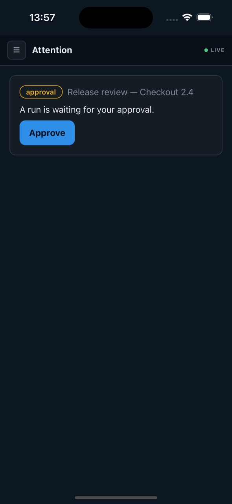
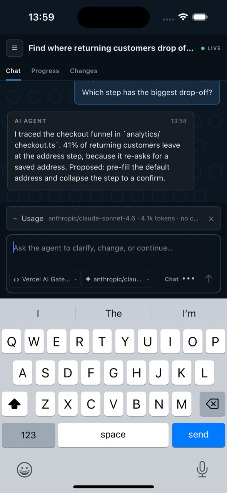
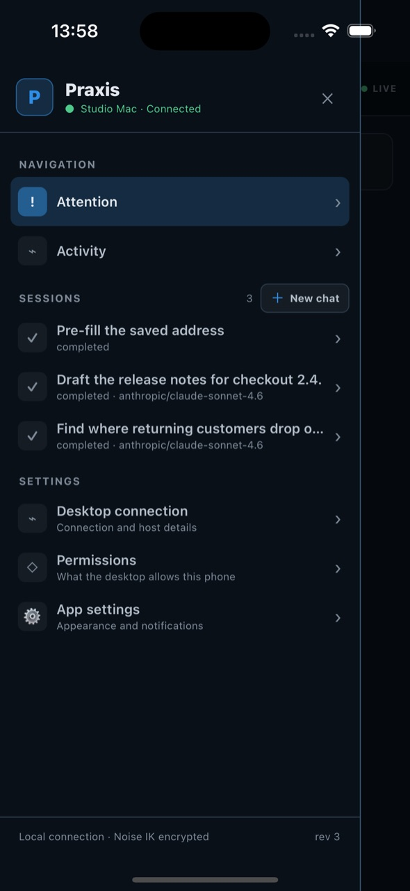
Pairing is a three-way handshake you can watch: the desktop issues a single-use invitation, the phone presents it over an encrypted channel, and the desktop asks you to confirm the phone and say what it may do.
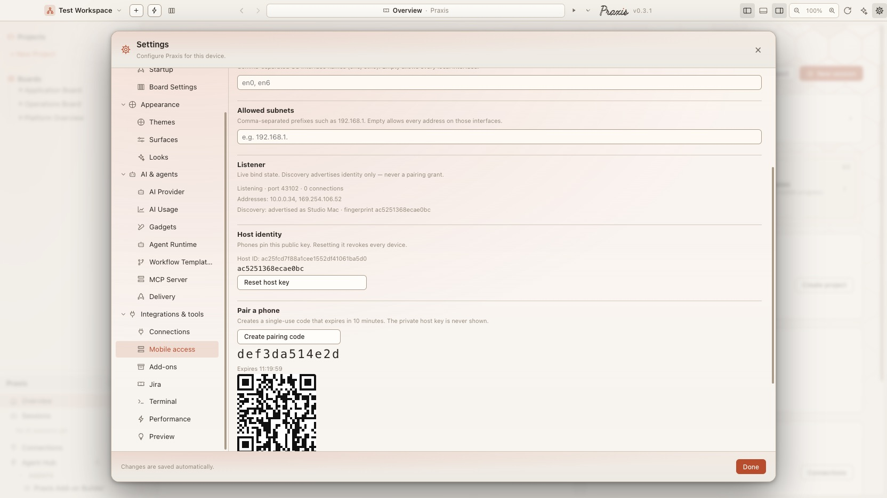
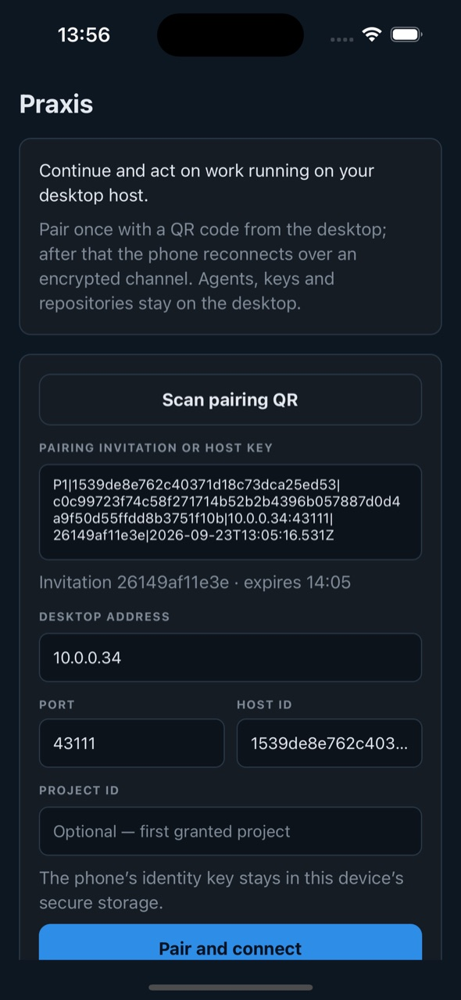
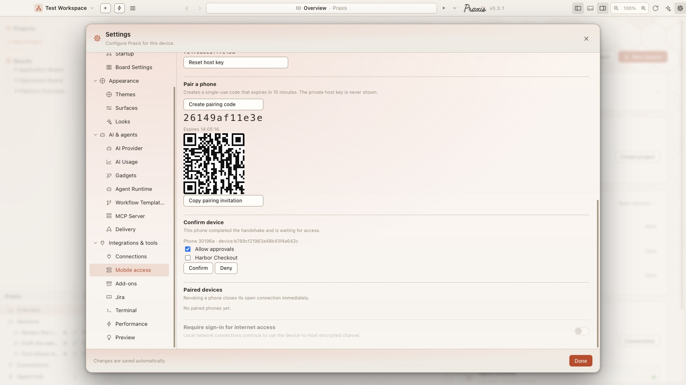
The phone keeps its identity key in the device's secure storage and the desktop remembers it as trusted, so reopening the app goes straight back in. The paired phone is listed under Paired devices on the desktop with a Revoke button that closes its connection immediately.
Anything waiting on a person lands here: a workflow run at its approval gate, or an agent asking before it uses a tool. Each card names the run or session it belongs to, and the answer goes straight back to the desktop.
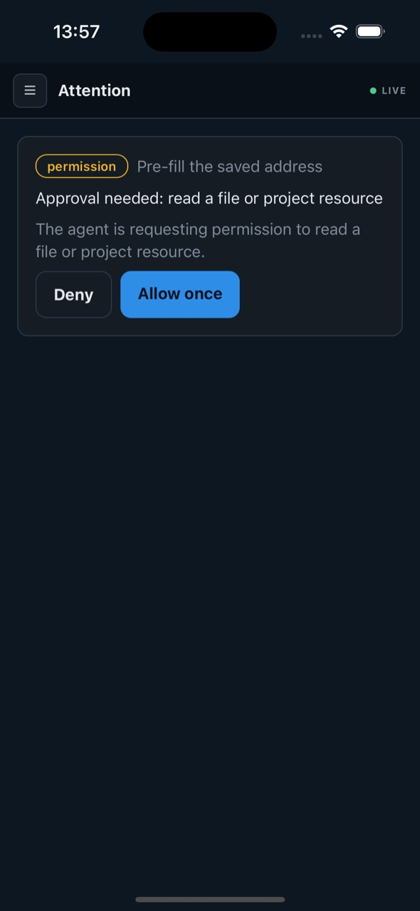
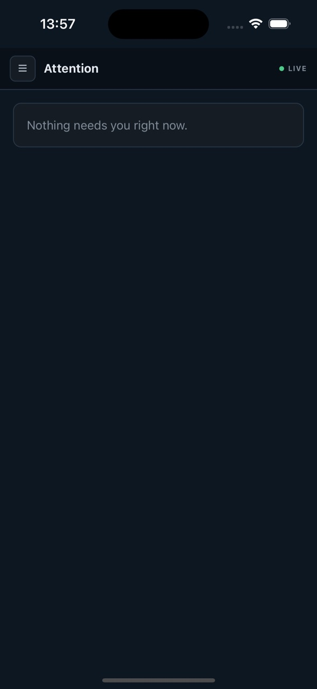
Open any session to read it and send the next message. The composer offers the same AIs and models the desktop has set up — nothing is configured on the phone, and the picker says why an AI is unavailable.
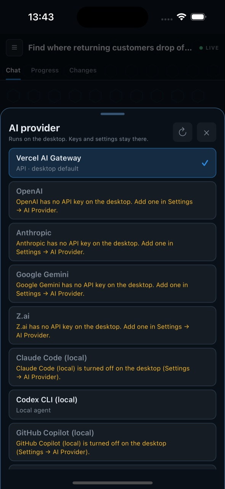
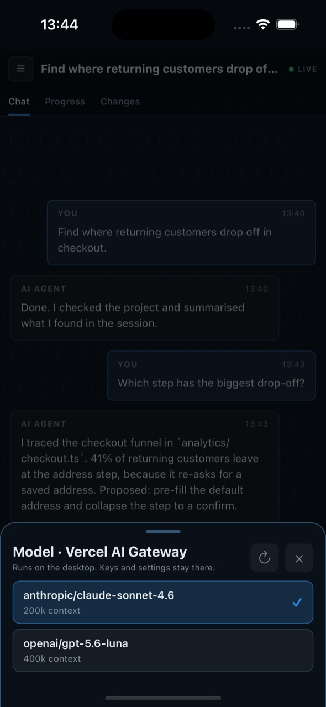
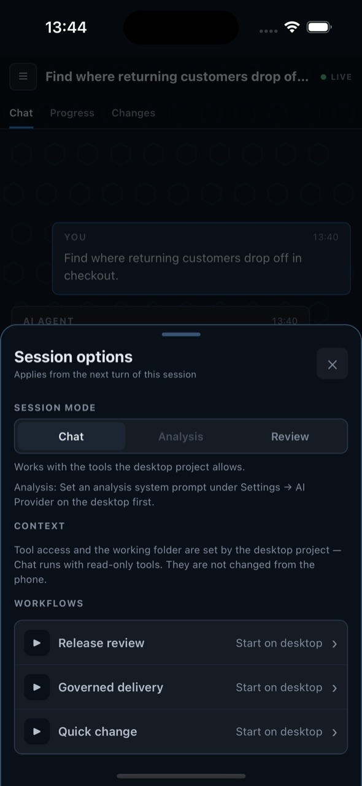
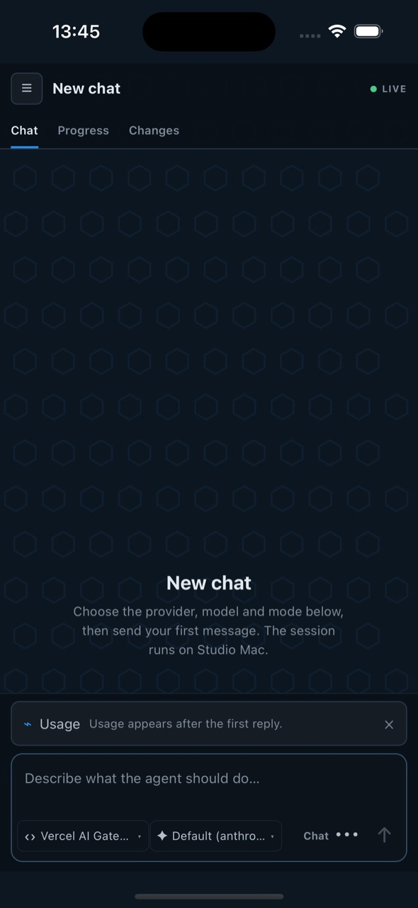
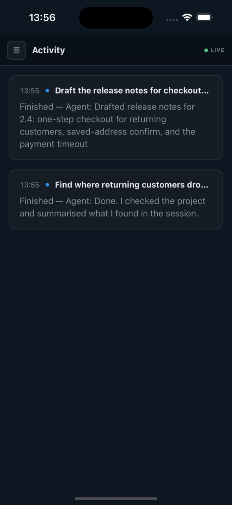
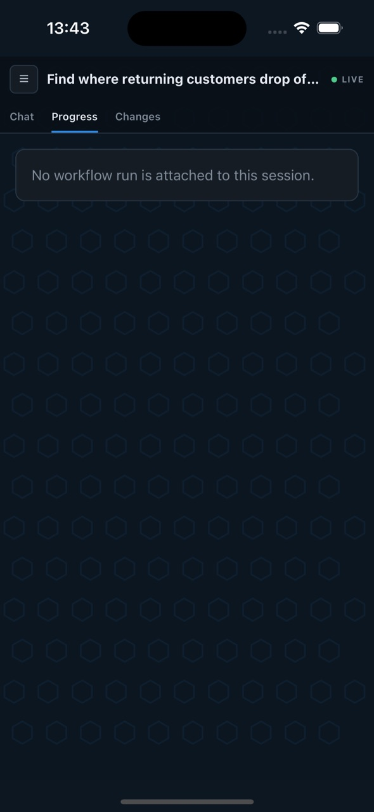
The phone is a remote control for work that runs on the desktop. It is shown what it needs to act, and nothing that would let it act on its own.
| Thing | Where it lives |
|---|---|
| AI provider keys | desktop only The phone sees which AIs are set up, never the keys. |
| Repositories and files | desktop only Shell and file access are never offered to phones. |
| Host private key | desktop only The phone pins the public key from the invitation. |
| Sessions, runs, attention | phone can act Read, continue, approve and answer — within what you granted. |
| Which projects | you choose Granted when you confirm the phone; changeable on the desktop. |
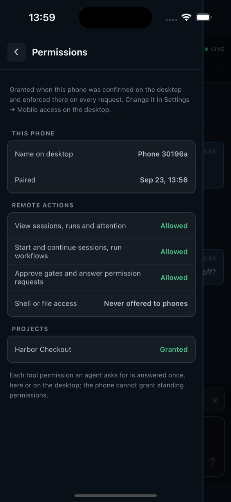
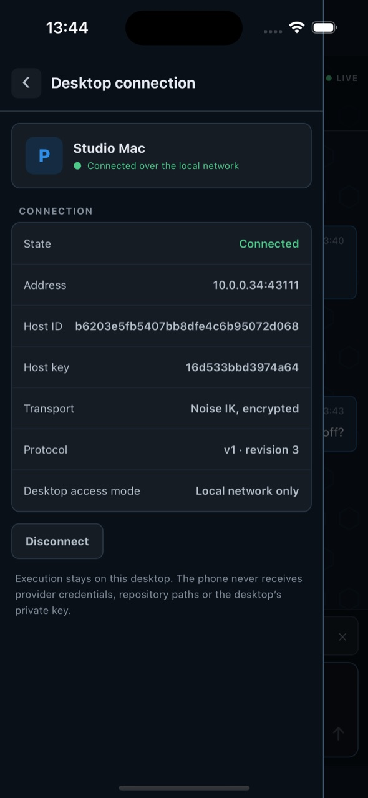
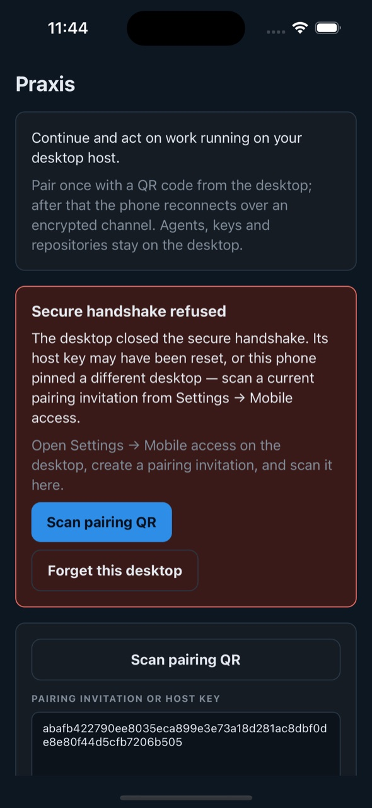
The desktop the phone remembers no longer has the key it pinned — its host key was reset, or it is a different Praxis on the same address.
Choose Forget this desktop, then pair again with a new invitation. Forgetting now also clears the address, port, host and project the form remembered, so nothing carries over from the old desktop.
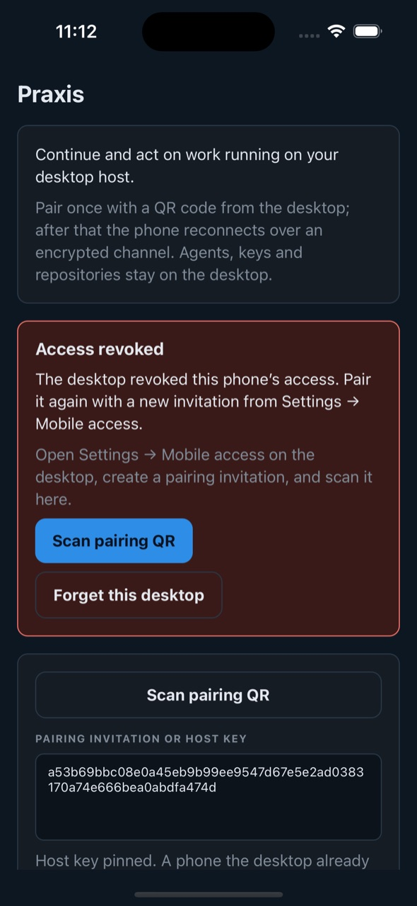
Someone pressed Revoke for this phone under Paired devices on the desktop.
Pair again from Settings → Mobile access if the phone should have access.
“Couldn't reach the Praxis desktop at 10.0.0.34:43111 (Connection refused).” Praxis isn't running, Mobile access is off, or the two devices are on different networks.
Check the desktop's Listener line in Settings → Mobile access — it shows whether it is listening, on which port and addresses — then Try again.
These screenshots come from the real app, driven on an iOS simulator against a demo desktop. Walking every screen that way turned up these, now fixed and covered by tests.
Every phone action on a workflow run was refused with “Run … was not found in project …”, because the run summary the check read had no project. Summaries now carry their project; approve, retry and the rest work.
Pairing with a different desktop afterwards failed with “not authorised for project …”. Forgetting now clears the whole form, and an invitation from another desktop drops the old desktop's project.
The phone's JavaScript engine formatted times unreliably. Times are now read and shown by the app itself — here and in message timestamps.
A card said dbd122d0-4c62-… instead of what it was about. Cards now name the session or run, which the desktop includes for approvals and failures.
“Allowed” stood as a column of letters next to a long label. Labels now wrap first.